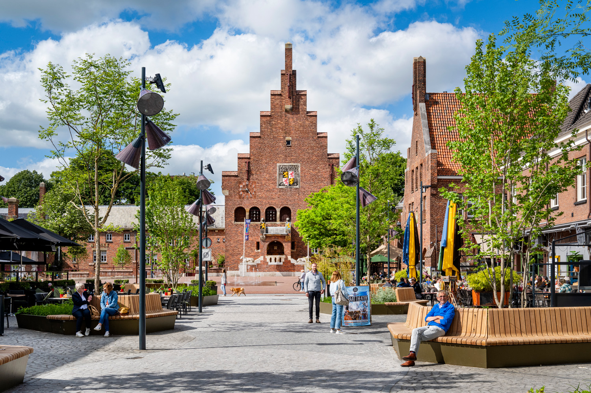
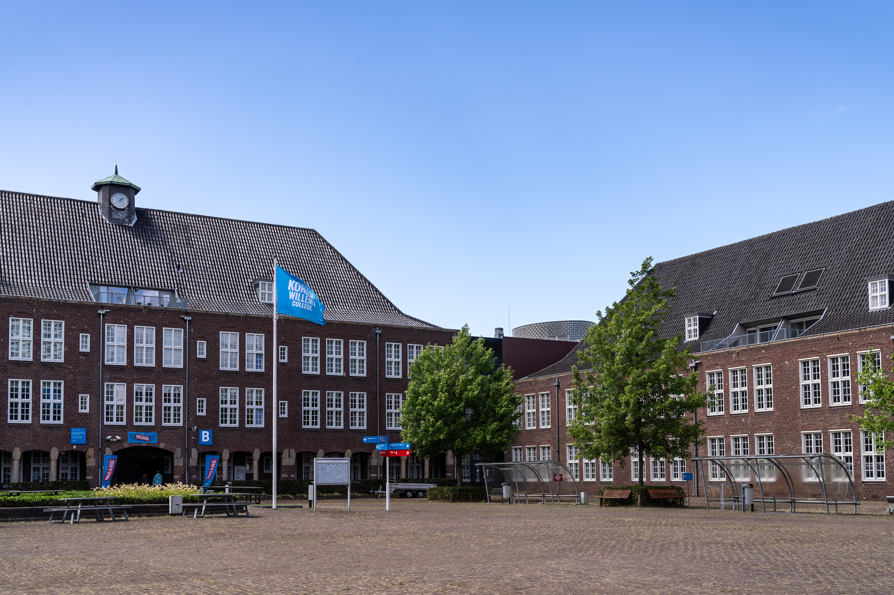
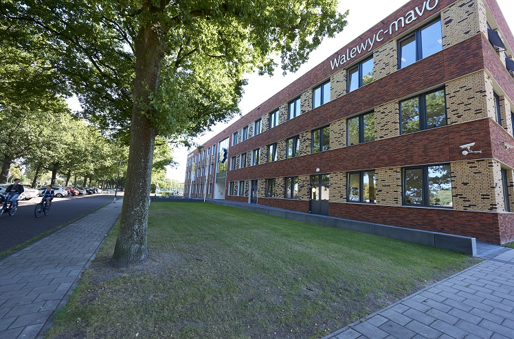

Bekijk project
Ik zit sinds 2025 in het eerste leerjaar van de opleiding software development. De eerste paar weken heb geleerd hoe ik een simpele html website op moet maken. Wat later in de periode hebben wij ook de modules office, security en netwerk gehad. In de tweede periode was ik bezig met de vakken interactieve website en embedded.
Bekijk mijn software skills
Ik zat van 2024 tot 2025 bij de opleiding Travel and hospitality. De reden dat ik deze opleiding koos was omdat ik toen nog niet wist wat ik wou doen later. Ik vond met klanten omgaan leuk en ik vind andere culturen en landen leuk dus ik dacht dat het de beste optie zou zijn maar dat bleek niet zo te zijn. Klik onder on erachter te komen wat ik heb gedaan op de opleiding.
Klik hier
Ik heb van 2020 tot 2024 op de Walewyc gezeten in Waalwijk. Ik heb in de eerste periode deels les op school gehad en deels online gehad wegens Corona. In de het tweede leerjaar kregen we nieuwe vakken zoals nask en economie en moesten we een vakdeel kiezen voor in het derde leerjaar. Ik koos uiteindelijk voor het vak economie en ondernemen. In het derde leerjaar moesten wij een keuze gaan maken welke vakken we in het vierde moesten laten vallen. En in het vierde hadden wij het eindexamen gemaakt.